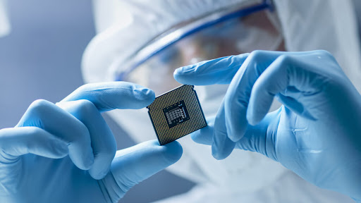

O que é a Nanotecnologia ?
A nanotecnologia é o estudo e o entendimento do controle e a manipulação de materiais em escala nanométrica, essa tecnologia já tem sido largamente empregada na fabricação de semicondutores e circuitos integrados (chips) – como computadores e telefones celulares - e ainda na confecção de dispositivos que incorporam a combinação de porções orgânicas e inorgânicas. Ela trabalha diretamente com átomos e moléculas e é um mecanismo que manipula a estrutura molecular dos materiais para alterar suas propriedades intrínsecas a fim de obter outro atributo com aplicações revolucionárias.
Está presente em inúmeros produtos do nosso cotidiano, como nos laptops, protetores solares, em calçados esportivos, telefones celulares, tecidos, cosméticos, automóveis e medicamentos, entre outros. Trata-se de um campo que floresceu dos anos 60 aos anos 80 e cresceu fortemente nas últimas duas décadas.
Extensões da Nanotecnologia:
A nanotecnologia é empregada em diversos setores. São partículas invisíveis a olho nu capazes de combater células cancerígenas, até painéis solares que rendem o dobro do original. Suas aplicações e os nanomateriais abrangem todos os tipos de setores industriais. As áreas mais comuns de ser encontradas são:
1º Eletrônica Os nanotubos de carbono que são utilizados estão a ponto de substituir o silício como material para fabricar microchips e dispositivos menores, mais rápidos e mais eficientes, assim como os nanofios quânticos que são mais leves, são condutores e resistentes.
2º Energia Um novo semicondutor projetado permite fabricar painéis solares que duplicam a quantidade de luz solar convertida em corrente elétrica. Reduzindo os custos, produzindo turbinas eólicas mais fortes e leves, e melhorando o desempenho dos combustíveis.
3º Biomedicina Propriedades de alguns nanomateriais os tornam ideais para melhorar o diagnóstico precoce e o tratamento de doenças neurodegenerativas ou do câncer. São capazes de atacar as células cancerígenas de forma seletiva sem prejudicar as restantes células saudáveis, também foram utilizadas para melhorar produtos farmacêuticos.
4º Alimentação Usa-se nanobiossensores para detectar a presença de patógenos nos alimentos ou nanocompostos para melhorar a produção de alimento, aumentando a resistência mecânica e térmica, diminuindo a transferência de oxigênio nos produtos embalados.
5 º Meio Ambiente Purificar o ar com íons, purificar águas residuais com nanobolhas ou os sistemas de nanofiltração para metais pesados são algumas de suas aplicações positivas para o meio ambiente.
Tipos de Nanotecnologia:
A classificação dos diferentes tipos da nanotecnologia são de acordo com seu modo de fluir (top-down ou bottom-up) e também da natureza do meio em que trabalham (seca ou úmida).
Descendente (top-down): Os mecanismos e as estruturas são miniaturizados em escala nanométrica — com um tamanho de 1 a 100 nanômetros —. Esse é o mais frequente até hoje, principalmente no campo da eletrônica.
Ascendente (bottom-up): Se inicia com uma estrutura nanométrica — uma molécula, por exemplo — e através de um desenvolvimento de montagem ou automontagem é possível criar um mecanismo maior do que o inicial.
Nanotecnologia seca: É usada para fabricar estruturas em carbono, silício, materiais inorgânicos, metais e semicondutores que não funcionam à base da umidade.
Nanotecnologia úmida: Baseia-se em sistemas biológicos presentes em um ambiente aquoso — incluindo material genético, membranas, enzimas e outros componentes celulares.
Assista o vídeo abaixo para entender um pouco mais sobre a Nanotecnologia:
Os dados desse site, foram obtidos através de pesquisa, utilizando as seguintes fontes: